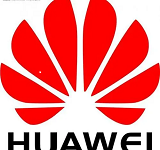

时报：华为“星闪技术”
该信息来自 华为科技
华为发布“星闪”。“星闪技术”号称重新定义车载无线短距通信，与传统汽车相比，车辆的线束繁多复杂，使得车辆的线路复杂， 维修和升级更换不便。而星闪技术，相较于蓝牙和WiFi无线连接方面，具有超低时延、超高可靠、精准同步等优势。
-
来源网站 华为公布“星闪技术”，多家上市公司位列星闪联盟
2020年9月成立的星闪联盟是致力于全球化的产业联盟，目标是推动新一代无线短距通信技术SparkLink的创新和产业生态，承载智能汽车、智能家居、智能终端和智能制造等快速发展的新场景应用，满足极致性能需求。 迄今为止会员单位已经多达140家，涵盖了整个产业链，包括芯片、测试仪器、模组、终端、整车厂等。
-
来源网站 华为星闪技术都解决了啥问题？
1、牵引车和挂车之间传统方案是采用线缆连接，由于机械伸缩会产生连接可靠性问题；
2、部署时间长，传统方案安装部署时间通常需要几个小时；
3、摄像头部署对定制化车型支持度不高；
4、多路高清图像的并发传输质量不高；